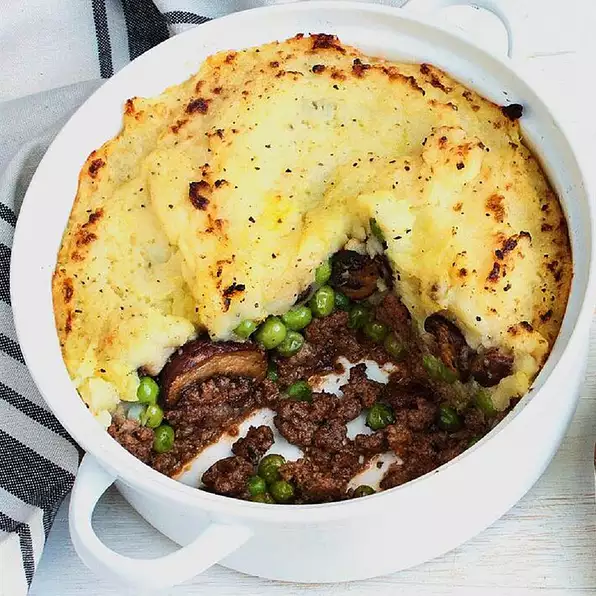

cottage pie

nutrition facts
Per Serving:
401 calories; protein 17.9g; carbohydrates 27.7g; fat 24.6g; cholesterol 76.2mg; sodium 199.4mg.
ingredients
- 4 large Yukon Gold potatoes, quartered
- 6 tablespoons butter, divided
- 1 clove garlic, minced
- salt and pepper to taste
- 1 tablespoon olive oil
- 1 pound lean ground beef
- 1 tablespoon herbes de Provence
- 1 teaspoon ground nutmeg
- 1 1/2 cups frozen peas
steps
- Preheat oven to 350 degrees F (175 degrees C). Lightly grease a 9 inch deep-dish pie plate.
- Place potatoes into a pot; cover with salted water, and bring to a boil over high heat. Reduce heat to medium-low, cover; simmer until tender, about 20 minutes. Drain; mash with 2 tablespoons of the butter and the garlic. Season to taste with salt and pepper; set aside.
- Meanwhile, heat the olive oil in a skillet over medium heat. Add ground beef, herbes de Provence, and nutmeg; cook and stir until beef is lightly brown and crumbly, about 10 minutes. Spread the beef evenly in the prepared pie plate. Cover evenly with the peas; spread the mashed potatoes over the peas. Dot the casserole with the remaining butter.
- Bake, uncovered, in the preheated oven until heated through and bubbly, about 20 minutes.